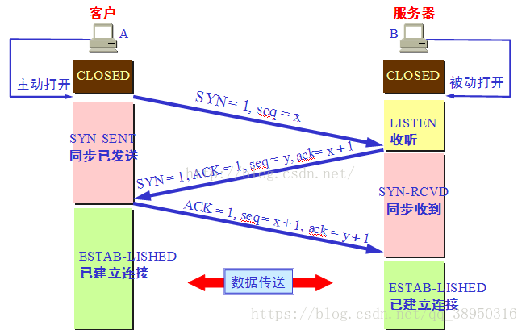
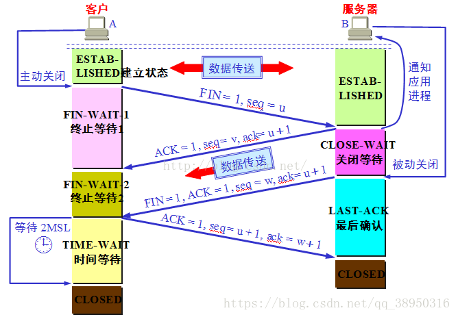

TCP（传输控制协议）：面向连接的 传输层 协议。可靠性高，基于字节流。
UDP（用户数据报协议）：无连接的 传输层 协议。简单但不可靠，基于数据报。
基于字节流：对于读写没有相对应的次数。
基于数据报：每对应一个发，就要对应一个收。
TCP的连接需要经过多次握手确认以及时间等待，因此过程复杂，实时性差。而UDP没有连接过程，因此实时性强。
TCP报文加入了同步序列号确认号等，保证了传输可靠性。但在传输相同大小数据时，
，因此TCP开销大于UDP。
一句话：可靠性让TCP变得复杂耗时
应用场景：
- UDP
注重实时高速，可靠性要求低的场合。面向数据报，数据大多为短消息，有大量client，网络负担重但对响应速度要求高
支持一对一、一对多、多对多等通信（网络直播、动作类网游）。 - TCP
注重可靠性，有延迟无所谓，需要大量传输数据。支持点对点通信（数据传输，纸牌游戏）。
TCP 通过“三次握手”建立连接，“四次挥手”关闭连接。
“三次握手”的目的：
“为了防止已失效的连接请求报文段突然又传送到了服务端，因而产生错误”。简言之，目的是 防止server端建立无效连接而一直等待，浪费资源 。client发出的第一个连接请求报文段并没有丢失，而是在某个网络结点长时间的滞留了，以致延误到连接释放以后的某个时间才到达server。本来这是一个早已失效的报文段。但server收到此失效的连接请求报文段后，误认为是client再次发出的一个新的连接请求，于是就向client发出 确认 报文段，同意建立连接。假设只有“两次握手”，那么只要server发出确认，新的连接就建立了。尽管连接建立，client由于没有发出连接请求便无视server的确认（不会传送任何数据给server），但server一直等待client发来数据。这样，server的很多资源就白白浪费掉了。假设有了“三次握手”，client将不会对sever发送来的 确认 作出确认，server因为没接收到client的确认而不会建立连接。
seq: 序列号，4字节（32位）。
ack: 确认号，4字节（32位），每次设置为发送端的序列号+1
SYN: 请求建立连接标志位。请求建立连接时，SYN=1。
ACK: 确认标志位，判断确认号是否有效，ACK=1。
FIN: 请求断开连接。
三次握手

1st：client请求连接，发送同步报文段（SYN=1，syn=x）给server端。
2nd：server对client的请求进行确认，同时发送自己的同步序列号。即发送ACK+SYN报文段（ACK=1，ack=x+1，SYN=1，syn=y）。
3rd：client接受server的ACK+SYN报文段，向server再次发送确认号ACK报文段（ACK=1，ack=y+1，syn=x+1）
第三次握手后，两者进入established状态。
四次挥手

1st：client请求关闭，向server发送结束报文段（FIN=1, seq=u）结束标志位+自己的序列号，自己进入 终止等待状态1。
2nd：server对client的请求进行确认，发送确认报文段（ACK=1，ack=u+1，seq=v）给client，自己进入 关闭等待（即client已经没有数据传送，等待server端的数据传送结束）。当client收到确认报文段后便进入 终止等待状态2（依旧接收server传送的数据），等待server的结束报文段。
3rd：server的数据传送完毕，向client发送确认结束报文段（FIN=1, ACK=1，ack=u+1，seq=w）表示自己可以关闭了，等待client最后确认。
4th：client接收到后，再次发送确认的报文段（ACK=1，ack=w+1，seq=u+1），server一看到确认就立刻关闭，但是TCP连接并没有结束，而是要经过 2MSL（最长报文段寿命） 时间等待(TIME_WAIT) 后再关闭连接。
所以server会比client早一点结束连接。
为什么建立是三次握手，关闭是四次挥手
因为连接时server可以ACK和SYN报文段一起发送client，而关闭时可能数据传送没结束，所以server只能先发送ACK报文段给client，等数据全部传送完毕后，再次发送FIN给client。因此，分开发送两个报文段导致关闭比建立多一次。
结束连接最后一步为什么等待 2MSL
假设网络不可靠，当client发出最后一个ACK后，若server没收到，server会再次发送FIN报文段给client直到得到回应。因此client发送完最后一个ACK后要等到一段时间确保server收到了ACK，只有在2MSL过程中没有再次收到server的FIN，client才能认为server已经结束连接，则自己也可关闭连接，这样TCP连接彻底关闭。
若建立连接后，客户端突然出现故障
TCP还设有一个保活计时器，显然，客户端如果出现故障，服务器不能一直等下去，白白浪费资源。服务器每收到一次客户端的请求后都会重新复位这个计时器，时间通常是设置为2小时，若两小时还没有收到客户端的任何数据，服务器就会发送一个探测报文段，以后每隔75秒钟发送一次。若一连发送10个探测报文仍然没反应，服务器就认为客户端出了故障，接着就关闭连接。